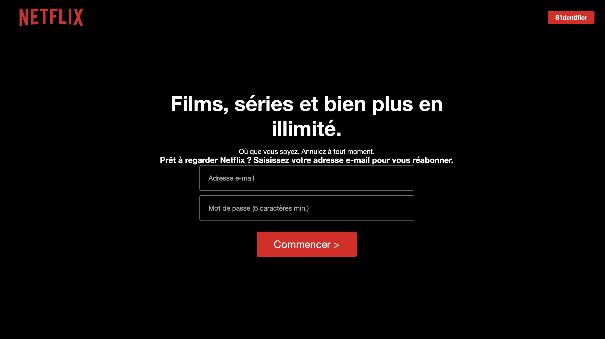
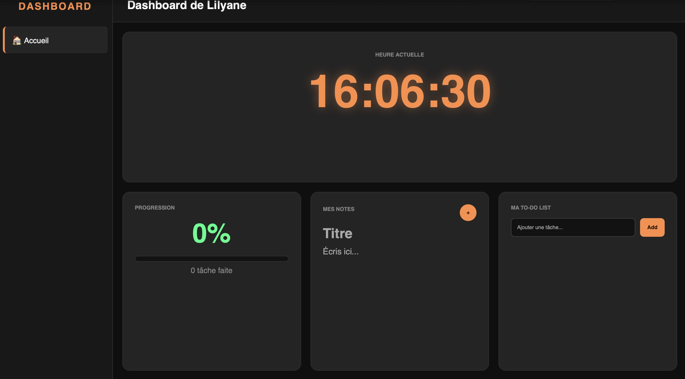
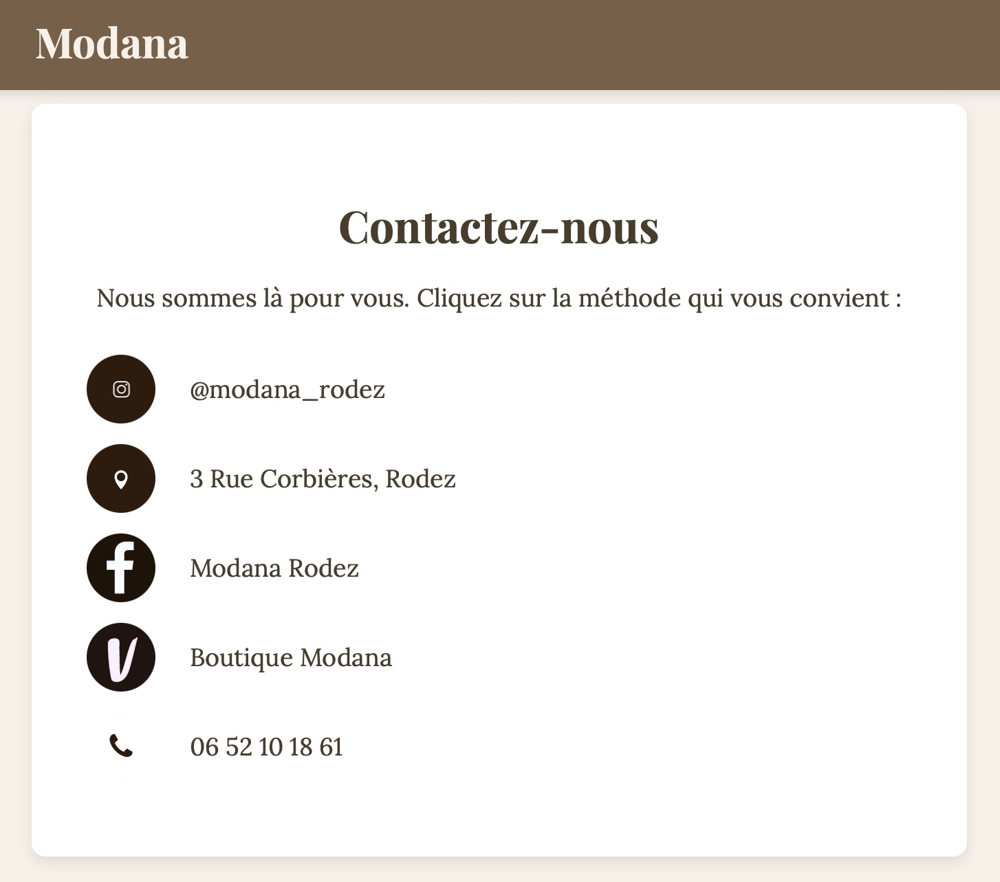

01
Interface de Netflix
Interface immersive axée sur le design UI et le responsive, et un début de Javascript.
HTML / CSS / JS
Future Conceptrice Développeuse d'applications
Web & Mobile

Mon aventure numérique a commencé très tôt :
Enfant, je bidouillais déjà l'ordinateur de mon père...
Et pourtant, Pendant longtemps, j'ai tenté de me conformer à un parcours classique et sérieux. Ma famille, me voyant brillante, me répétait sans cesse que je deviendrais la future avocate de la lignée. J'ai donc essayé de suivre cette voie pour les rendre fiers, en mettant de côté ma propre passion pour le numérique.
Mais plus j'avançais, plus je sentais que ce cadre ne me correspondait pas. Je n'étais pas l'actrice de mon propre chemin.
Aujourd'hui, j'ai réajusté ma trajectoire.
J'ai choisi de faire du code mon nouveau langage.
Mon objectif est clair : intégrer ma formation de conception d'application web et mobile pour évoluer dans le numérique et concrétiser mes projets.

Interface immersive axée sur le design UI et le responsive, et un début de Javascript.

Outil de productivité avec gestion de tâches en JS.

Création d'un site vitrine pour la boutique Modana avec un style minimaliste.